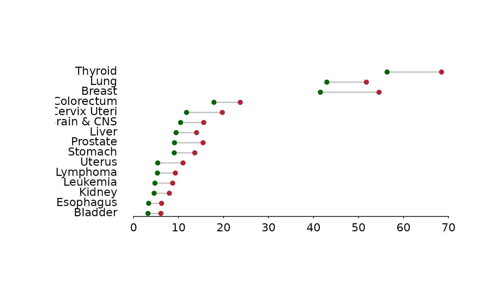

Plot dumbbell chart
Arguments
- data
A data frame contains data to be plotted.
- x
A category variable in data.
- y1
Variable indicate start point.
- y2
Variable indicate end point.
- topn
Top n values to be plotted.
- sort
Sort options.
- legend
Legends.
- cols
Colors of the start and end points.
- gl
Integer. Indicating the line type of the grids.
- gl_col
Color of the background grid.
- main
Main title of the plot.
Examples
asr <- create_asr(canregs[[1]], year, cancer, show_ci = TRUE) |>
drop_others() |>
drop_total() |>
add_labels(vars = "cancer", lang = "en", label_type = "abbr")
draw_dumbbell(asr, "cancer_en", asr_lower_cn2000, asr_upper_cn2000, topn = 15)
